Use Databricks with Git
Guidance for analysts on how to connect Databricks to GitHub and Azure DevOps
Why should I use Git with Databricks?
For analytical projects developed on Databricks in the DfE, we recommend using GitHub or Azure DevOps for sharing, collaborating and proper version control of work.
Easier collaboration
When you’re working on notebooks in Databricks without a Git connection, they tend to be saved in your own personal Workspace. This means that they are only accessible by you, unless you share them. This has the potential to cause issues if someone needs to run any code you have stored in a notebook within Databricks e.g. when you leave your current team, take non-working days or annual leave, team members will not be able to access any of your code stored in your notebooks on Databricks. If the notebooks are stored in a Github or Azure DevOps repo, your team can all access them by cloning the repo in Databricks.
Version control
Databricks autosaves your notebooks as you’re working on them, making version control more difficult. If you use Git, you’ll be able to see the full version history of your work and easily roll back to older versions if you need to. It also significantly helps simplify switching between different methodologies as well as facilitating proper code QA and review.
GitHub or Azure DevOps?
Either GitHub or Azure DevOps repos can be used in connection with Databricks, but we advise you to follow the guidance relating to public and private repos in our What is Git for? section.
Is it safe?
The connection between Git and Databricks is established using a secure access token from your Git account, which means it is safe. You will need to renew your access token after a given period of time - if you do not, then your connection between Git and Databricks will no longer work.
Additionally, when you commit and push notebooks through the Databricks interface, it will automatically clear any output cells from your notebook, meaning that you cannot accidentally include any unpublished data in there.
Setting up a connection to Azure DevOps
Prerequisites
- An Azure DevOps account and access to the repo you need to connect to
- A Databricks account and access to your notebooks
Getting set up
Access Tokens
Access tokens are long strings of numbers and letters that act like a password between two services. They identify the user and their permissions from one service to another.
In this case, we will generate an access token in DevOps and give it to Databricks. To generate your Azure DevOps access token, go to DevOps and click the user settings icon to the left of your initials in the top right of your screen - it looks like a person with a cog next to them:
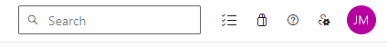
In the user settings menu, click Personal Access Tokens. On the screen that appears, click the blue “New Token” button in the top right:
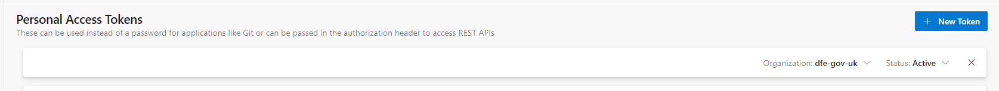
The following window should appear:
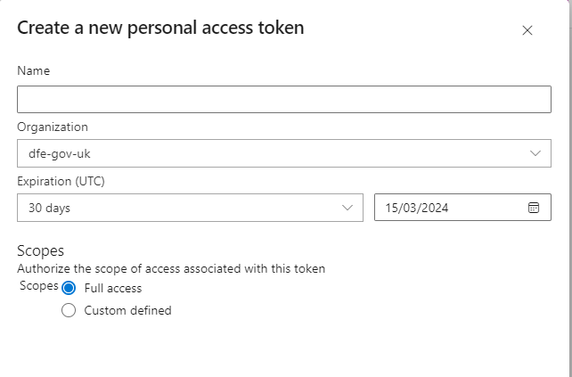
- Give the token a sensible name so that you can identify it in your list of tokens.
- The organisation field should be pre-populated for you, this can be left alone.
- You can modify the expiration date. Every time the token expires, you will have to follow this guidance again to set up a new token and reconnect to Git, so choose something sensible.
- You should make sure that “Full access” is selected under the Scopes heading.
When you have entered all of the required information, click “Create” at the bottom of the window.
A “Success!” window will open containing your new access token. You must copy the token immediately, as you will not be able to access it again once this window is closed. If you fail to copy the token, you will have to regenerate a new one.
Connecting to Databricks
Now that you have your access token, you should go straight to Databricks. In the top right corner of the Databricks window, click your username and then “User Settings”:
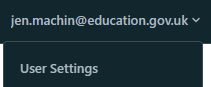
You should then select “Linked Accounts” from the User menu on the left. The following page will open:
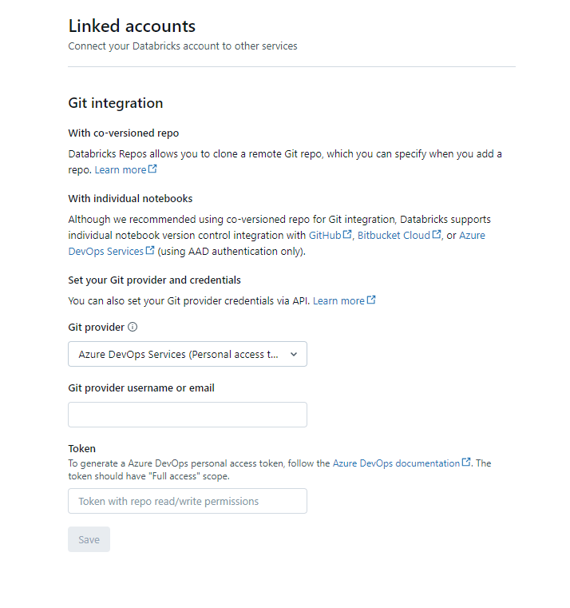
- We recommend immediately pasting your copied access token into the “Token” field at the bottom of the page to avoid losing it.
- Git provider should be set as “Azure DevOps Services (Personal Access Token)”
- Enter your email into the “Git provider username or email” field
You can then click Save at the bottom of the page, and now your connection between Azure DevOps and Databricks is established!
Connecting to repos and cloning
Just like any other way that you’ve worked with Git before, the first step is going to be to clone your repo inside Databricks. Git folders (previously called Repos in Databricks) can now be created in your Home folder.
In the blue menu on the left, click Workspace, and click the Home folder. The menu should look like this:
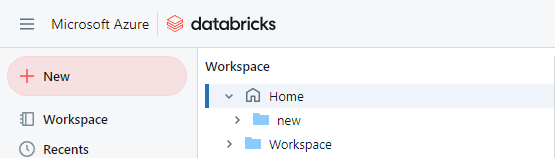
Click the blue “Create” button in the top right corner, and then click “Git folder”:
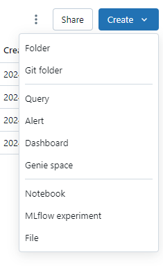
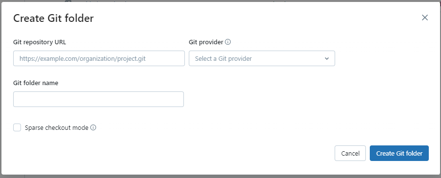
- You will first need to go to Azure DevOps and copy the link to clone the repo as you usually would
- Paste this link into the “Git repository URL” field
- Under “Git Provider”, select “Azure DevOps Services”
- The “Repository name” field should be automatically populated when you enter the URL.
You can then click “Create Git folder”. When the folder is created, you will be able to see it under your name in the Home folder.
Sparse checkout and Cone Patterns
Databricks cannot clone very large repos. It is best practice not to have a repo of this size, but if you attempt to clone a large repo, you will receive an error message. In this instance, you will need to perform a sparse checkout. This only clones a selection of items in your repo. To do this, select the “Advanced” option when in the “Add repo” menu, and tick the “Sparse checkout mode” option. You can tell Databricks which elements of the repo you would like it to clone, and you can do this by specifying something called Cone Patterns. If you do not specify any Cone Patterns, then the Databricks default is to clone only files in the root folder, but none from any subdirectories. To specify your own Cone Patterns, enter them in the box provided. You can enter multiple patterns but if the folders that they refer to contain more than 800MB of data then your clone will continue to fail.
You might define your Cone Patterns as something like:
folder_a folder_b/subfolder_c
The second example will only clone subfolder_c and not the rest of the contents of folder_b.
Please note: You cannot currently disable sparse checkout mode once it is enabled, but you can modify Cone Patterns. If you create a new folder, you must add it to your Cone Pattern list before you can commit and push. You can find more information on sparse checkout and Cone Patterns on the Databricks website.
Working in repos in Databricks
Folders in Databricks
To be able to add your notebooks to a repo, you need to make sure that you save them in the correct place. You will need to find the Git folder that you cloned previously, and work from there. You can see your Git folders underneath the Home section, like this:
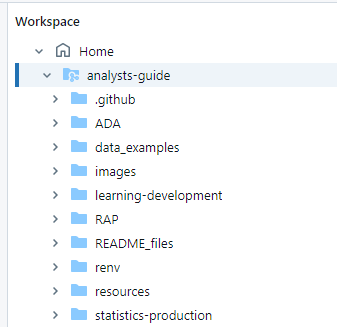
In the screenshot above, you can see the analysts-guide repository with all of its subfolders.
Git can see things inside the Git folders that you create in your Home area. This means that when you save something in a Git folder, it can be committed and pushed to Git. It is therefore good practice to always save notebooks in a Git folder.
Git pull, commit, and push in Databricks
Git pull
You can access the menu to pull, commit and push from several places within Databricks. This interface is the same whether you’re working with a DevOps repo or a Github repo.
At the top of any notebook that’s saved in a repo, you’ll see a little grey branch icon with the name of a repo next to it. In the case of this notebook, it’s on the main branch:
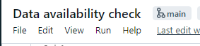
You can also access the Git menu by clicking the branch name next to the repo name within your personal folder, which you can access by selecting Workspace > Users > your email address in the left hand menu:

If you click the branch name, it’ll open the Git interface within Databricks:
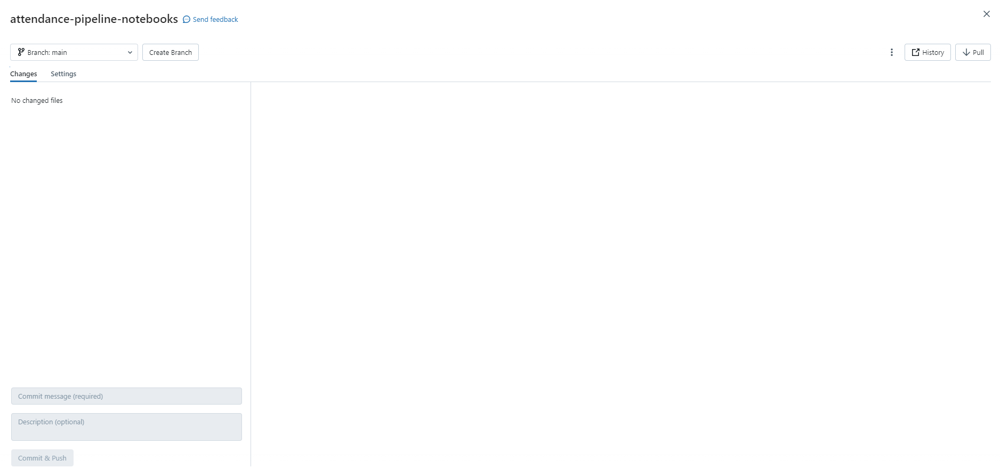
From here, you can perform Git pull by clicking the pull icon in the top right. There is a dropdown menu in the top left corner that allows you to change the branch or create a new branch if required.
Git commit and push
When you have made changes to a notebook, it will appear in the Changes section of the Git interface. You can also see the actual changes that have been made in the right hand box to make sure that you’re committing the correct file:
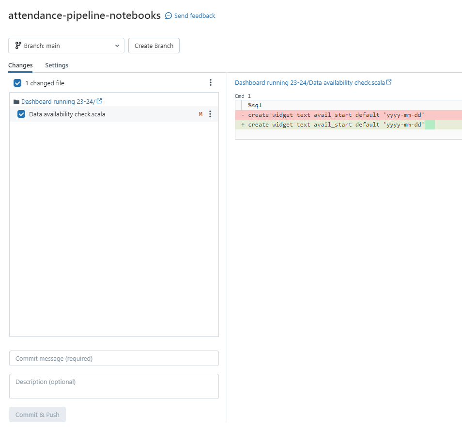
In Databricks, you commit and push as one action, rather than as two separate ones. Enter your commit message into the “Commit message” box (you can ignore the Description box) and click the “Commit & Push” button.
Additional Git commands in the Databricks interface
You can access additional Git features such as merge, rebase and reset directly within the Databricks interface by clicking the 3 dots in the menu as shown in the image below:
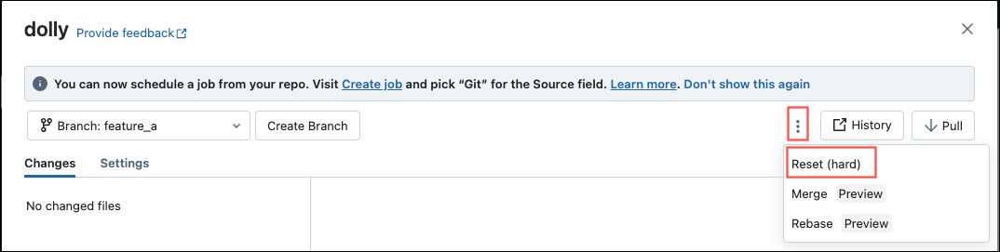
When merging, you are also able to resolve merge conflicts inside Databricks itself.
Please be warned that we would usually advise against using Git reset as you can permanently lose changes you’ve made and this cannot be undone.
There is additional guidance on each of these advanced features in the Databricks manual. Please use Git reset with caution as you can easily lose recent changes when performing this action.